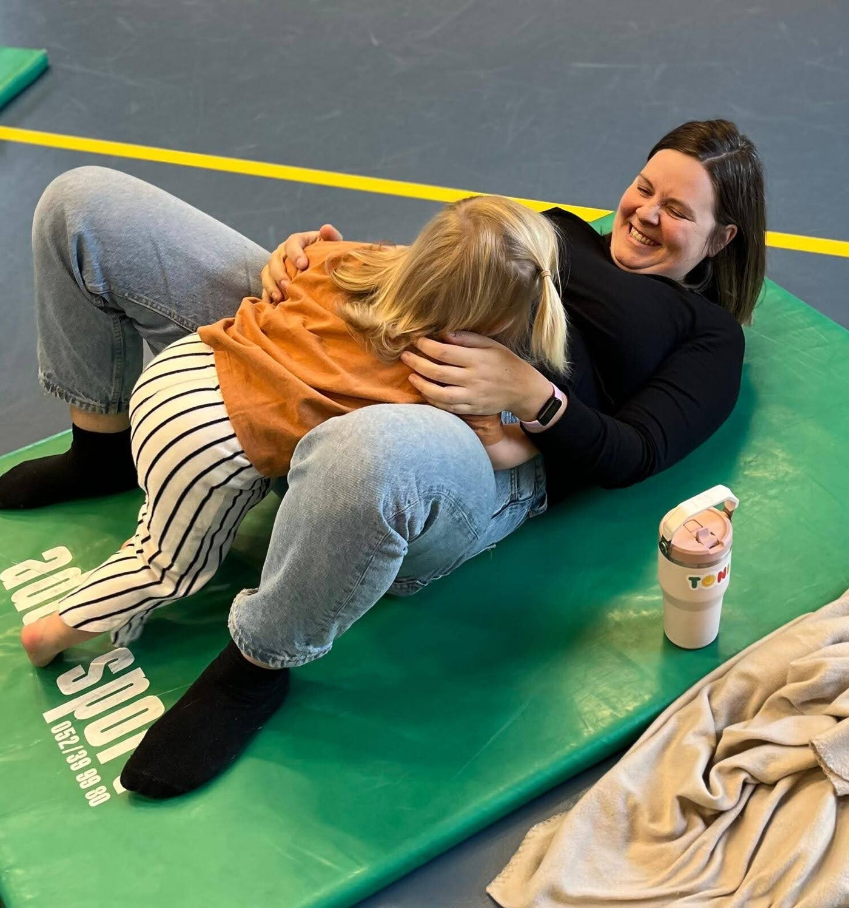
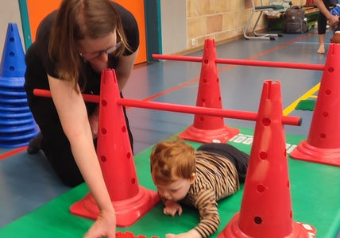
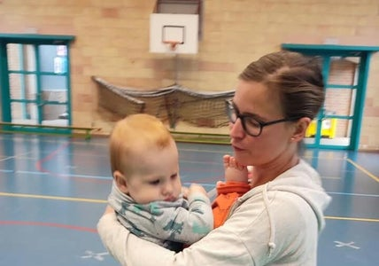
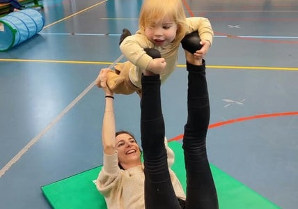
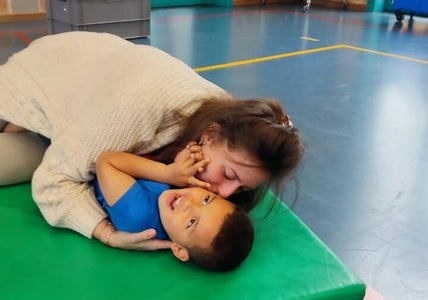
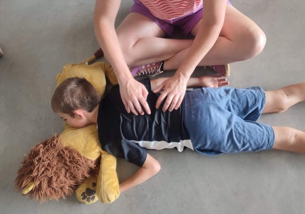

Workshops voor Ouder & Kind
Samen tijd maken voor elkaar
In de drukte van het dagelijkse leven gaat er vaak heel wat aandacht naar alles wat nog moet gebeuren. Tijdens de ouder-kindworkshops van Sprankel nodig ik je uit om dat to-do-lijstje even aan de kant te leggen en bewust tijd te maken voor je kind én voor elkaar.
Samen gaan jullie bewegen, spelen, ontdekken en verwonderen. Daarbij hoeft niets en mag alles. Het belangrijkste is dat jullie samen een fijne tijd beleven, plezier maken en volop kunnen genieten van het moment.
Door samen te spelen en te bewegen, ontstaat er op een natuurlijke manier ruimte voor verbinding. Je krijgt de kans om je kind op een andere manier te ontmoeten, om samen te lachen en om als ouder misschien zelf opnieuw even in die speelse, zorgeloze wereld van een kind te stappen. Tegelijk krijgt je kind de ruimte om het eigen lichaam te ontdekken, nieuwe dingen uit te proberen en helemaal zichzelf te zijn. Zo ontstaan er kleine momenten van nabijheid en verbondenheid die jullie band kunnen versterken.
Door samen te spelen en te bewegen, ontstaat er op een natuurlijke manier ruimte voor verbinding. Je krijgt de kans om je kind op een andere manier te ontmoeten, om samen te lachen en om als ouder misschien zelf opnieuw even in die speelse, zorgeloze wereld van een kind te stappen. Tegelijk krijgt je kind de ruimte om het eigen lichaam te ontdekken, nieuwe dingen uit te proberen en helemaal zichzelf te zijn. Zo ontstaan er kleine momenten van nabijheid en verbondenheid die jullie band kunnen versterken.

Een workshop die mee beweegt met jullie
Bij Sprankel vind je verschillende ouder-kindworkshops, elk met een eigen insteek en afgestemd op verschillende leeftijden en ontwikkelingsfasen. Misschien wil je vooral samen spelen en plezier maken, je kindje de ruimte geven om op ontdekking te gaan of juist bewust tijd maken voor rust en verbinding. Je kunt bij Sprankel terecht met je kindje vanaf ongeveer één jaar tot twaalf jaar. Bij elke workshop staat het samen beleven centraal, maar de manier waarop we dat doen, verandert mee met de leeftijd, de groep en wat er op dat moment nodig is.
Elke workshop bereid ik met veel zorg voor, maar tijdens de sessie blijf ik ook aandachtig kijken naar wat er in de groep gebeurt. Ik stem af op de kinderen, op hun tempo en op wat zij nodig hebben. Soms is er behoefte aan volop bewegen en spelen, terwijl er op een ander moment meer ruimte mag zijn voor rust, nabijheid of een kleine aanpassing. Ook jij als ouder mag daarin gewoon jezelf zijn. Er hoeft niets perfect te verlopen en je hoeft geen bepaalde verwachtingen waar te maken.
Vanuit mijn achtergrond en ervaring kijk ik bovendien met aandacht naar wat er tussen jou en je kind gebeurt. Wanneer ik iets opmerk dat voor jou als ouder waardevol kan zijn, deel ik dat graag met je. Soms kan een kleine tip, een herkenbaar moment of een ander perspectief je helpen om met nieuwe ogen naar je kind of jullie samenspel te kijken. Niet omdat er iets moet worden opgelost, maar omdat het fijn kan zijn om elkaar op een andere manier te leren begrijpen.
Zo wordt het geen workshop die je gewoon moet volgen, maar een moment dat mee mag bewegen met de mensen die aanwezig zijn. Een moment waarop je even loskomt van alles wat moet en opnieuw ruimte maakt voor verbinding, speelsheid en plezier.
Want soms is vertragen niet alleen stilstaan. Soms vind je net rust, verbinding en jezelf terug door te bewegen, te spelen en volop aanwezig te zijn in het moment.
Hieronder ontdek je de verschillende workshops. Kijk rustig rond en ontdek welke workshop het beste past bij jou en je kind. Bij elke workshop vind je meer informatie over de inhoud en voor welke leeftijd die geschikt is.
Hieronder ontdek je de verschillende workshops.
Kijk rustig rond en ontdek welke workshop het beste past bij jou en je kind.
Bij elke workshop vind je meer informatie over de inhoud en voor welke leeftijd die geschikt is.

Het Wonderpad
Voor ouders en kinderen van 1 tot 3 jaar

Knuffel & Ontmoet
Voor ouders en kindjes van 10 tot 22 maanden

Speel & Verbind
Voor ouders en kinderen
van 2 tot 4 jaar

Speel & Verbind
Voor ouders en kinderen van 5 tot 7 jaar

Speel & Verbind
Voor ouders en kinderen van 8 jaar tot 12 jaar